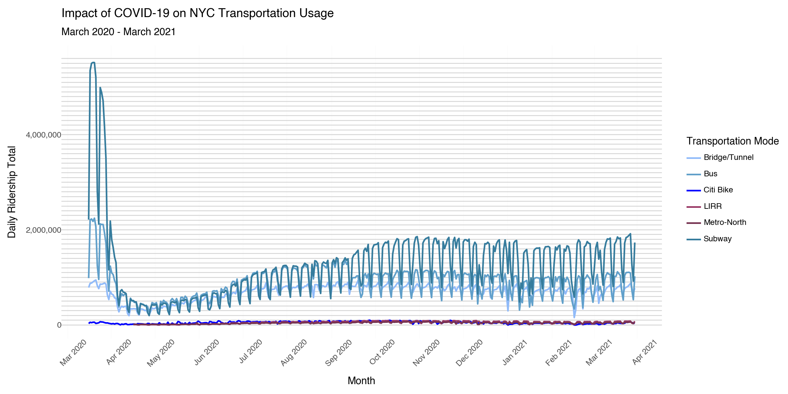
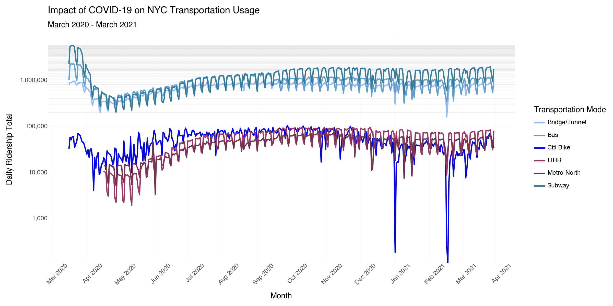

Give me Python + plotnine code for a cartesian line visualization that compares the use of Citi Bike versus the use of other modes of transportation over time from March 2020 through March 2021. The visualization should have the months represented on the x axis, usage percent change on a linear scale mapped to the y axis (100 descending to -100 displayed in increments of 10), and have horizontal (not vertical) separation lines across the visualization as a visual aid to mark the 10% increments. The Python + plotnine code will use a separate covid_ridership.csv file that contains the data.
The covid_ridership.csv dataset includes:
date: The observation date
type: The transportation mode (subway, bus, lirr, metronorth, bridgetunnel, citibike)
pct: Percent change in ridership compared to the equivalent day-of-week in the prior year (2019-2020)
total: Absolute daily ridership count
Below are the colors to be associated with each transportation mode. Include a legend for these colors and transportation modes.
Subway: #367C9D (medium blue)
Bus: #61A0CA (light blue)
Bridge/Tunnel: #91BBF9 (pale blue)
LIRR: #993865 (magenta)
Metro-North: #773452 (burgundy)
Citi Bike: #0000FF (bright blue—distinct from subway)
Python + plotnine
import pandas as pdfrom plotnine import*# 1. Load the dataset# Assuming 'covid_ridership.csv' is in your directorydf = pd.read_csv('covid_ridership.csv')# 2. Data Preparation# Convert date string to datetime objectsdf['date'] = pd.to_datetime(df['date'])# Filter for the requested timeframe (March 2020 through March 2021)mask = (df['date'] >='2020-03-01') & (df['date'] <='2021-03-31')df_filtered = df.loc[mask].copy()# Define color hex codes for each modecolor_palette = {'subway': '#367C9D','bus': '#61A0CA','bridgetunnel': '#91BBF9','lirr': '#993865','metronorth': '#773452','citibike': '#0000FF'}# 3. Create the Visualizationplot = ( ggplot(df_filtered, aes(x='date', y='pct', color='type'))# Layer 1: Draw horizontal increment lines first so they are behind the data+ geom_hline(yintercept=range(-100, 110, 10), color='#E5E5E5', linetype='solid', size=0.5)# Layer 2: Draw the trend lines+ geom_line(size=1.2)# Custom color mapping and legend labels+ scale_color_manual( values=color_palette, labels={'subway': 'Subway','bus': 'Bus','bridgetunnel': 'Bridge/Tunnel','lirr': 'LIRR','metronorth': 'Metro-North','citibike': 'Citi Bike' }, name="Mode" )# Configure Y-axis: Linear scale from 100 to -100 with 10% breaks+ scale_y_continuous( limits=(-100, 100), breaks=range(-100, 110, 10), labels=lambda l: [f"{int(x)}%"for x in l] )# Configure X-axis: Month labels+ scale_x_datetime( name="Month", date_breaks='1 month', date_labels='%b %Y' )# Labels and Titles+ labs( title="Impact of COVID-19 on NYC Transportation Usage", subtitle="March 2020 - March 2021", y="Usage Percent Change" )# Theme adjustments for clarity+ theme_minimal()+ theme( axis_text_x=element_text(rotation=45, hjust=1), panel_grid_major_y=element_blank(), # Handled by geom_hline panel_grid_minor_y=element_blank(), panel_grid_major_x=element_blank(), figure_size=(12, 7) ))plot.show()
DATA: covid_ridership.csv with date, type, pct, and total.
TRANS: Time period filter to include only March 2020 through March 2021.
SCALE: Linear
COORD: Cartesian
ELEMENTS: Lines to display the trends over time. The provided hex colors were mapped to individual transportation modes.
GUIDE: Horizontal lines that serve as easy visual tracks to locate around where a certain point falls on the y-axis.
I felt as if the AI understood the prompt and implemented each detail.
2. Design Choices
A title, subtitle, axis labels, and legend labels were automatically added by the AI. The x axis labels were also rotated even though I didn’t specify that. I feel that all of those were good design choices that I should have considered myself.
3. Bertin Validation
I feel that the trend lines are well detailed, showing the increases and decreases. It looks similar to the one in the NYT article, except with Citi Bike data added.
A: When labels are at the end of the lines, it is great for a quick look to check what each line references, and it looks simpler. However, when examining the various points of each line, the viewer may have to continually check the end of the line to remind themselves, or manually check the line colors and memorize from there. A legend with colors means that the viewer has more effort front loaded, but afterward will be able to quickly identify any line and more quickly analyze and compare points.
B: Weather, significant city or world events, company decisions, and other factors would need to be considered to determine if a single day -60% ridership drop was more than just an isolated incident. A comparison with the usage of other transportation modes may also provide insight. If Citi Bike was examined in isolation, the wrong assumptions could be made by focusing purely on factors that are specific to Citi Bike.
C: When all transportation modes in all their colors are displayed at once, it allows for more detailed examination of the trends. When all colors but one are removed, it is useful for directing the eyes of the viewer to a specific line that is being discussed. This removes the ability to quickly compare to other specific lines, but the intent here often isn’t to make those sorts of comparisons. If just a single line is displayed across multiple visualizations, it’s a way to take the focus aspect even further. However, this way of representation is the worst of the three for comparisons because it isn’t easy to check alignments or compare points.
Question 4
A
Prompt
Give me Python + plotnine code for a cartesian line visualization that compares the use of Citi Bike versus the use of other modes of transportation over time from March 2020 through March 2021. The visualization should have the months represented on the x axis, absolute daily ridership totals on a linear scale mapped to the y axis, and have horizontal (not vertical) separation lines across the visualization as a visual aid to mark 100,000 increments. The x axis should have a Month label, the y axis a “Daily Ridership Total” label, and the overall title and subtitle should remain as “Impact of COVID-19 on NYC Transportation Usage” and “March 2020 - March 2021”. The Python + plotnine code will use a separate covid_ridership.csv file that contains the data.
The covid_ridership.csv dataset includes:
date: The observation date
type: The transportation mode (subway, bus, lirr, metronorth, bridgetunnel, citibike)
pct: Percent change in ridership compared to the equivalent day-of-week in the prior year (2019-2020)
total: Absolute daily ridership count
Below are the colors to be associated with each transportation mode. Include a legend for these colors and transportation modes.
Subway: #367C9D (medium blue)
Bus: #61A0CA (light blue)
Bridge/Tunnel: #91BBF9 (pale blue)
LIRR: #993865 (magenta)
Metro-North: #773452 (burgundy)
Citi Bike: #0000FF (bright blue—distinct from subway)
Python + plotnine
import pandas as pdfrom plotnine import*# 1. Load the dataset# Assuming 'covid_ridership.csv' is in the current working directorydf = pd.read_csv('covid_ridership.csv')# 2. Pre-processing# Convert date column to datetime objectsdf['date'] = pd.to_datetime(df['date'])# Filter for the specific timeframe: March 2020 through March 2021mask = (df['date'] >='2020-03-01') & (df['date'] <='2021-03-31')df_filtered = df.loc[mask].copy()# Define the custom color palette and labels mappingcolor_map = {'subway': '#367C9D','bus': '#61A0CA','bridgetunnel': '#91BBF9','lirr': '#993865','metronorth': '#773452','citibike': '#0000FF'}label_names = {'subway': 'Subway','bus': 'Bus','bridgetunnel': 'Bridge/Tunnel','lirr': 'LIRR','metronorth': 'Metro-North','citibike': 'Citi Bike'}# 3. Create the Visualization# Calculate the range for horizontal lines at 100,000 increments based on datamax_ridership = df_filtered['total'].max()h_lines =range(0, int(max_ridership) +100000, 100000)plot = ( ggplot(df_filtered, aes(x='date', y='total', color='type'))# Draw horizontal increments first so they sit behind the data lines+ geom_hline(yintercept=h_lines, color='lightgray', linetype='solid', size=0.5)+ geom_line(size=1)# Map colors and set legend labels+ scale_color_manual( values=color_map, labels=label_names, name="Transportation Mode" )# Configure axes+ scale_x_datetime( name="Month", date_breaks='1 month', date_labels='%b %Y' )+ scale_y_continuous( name="Daily Ridership Total", labels=lambda l: [f"{int(x):,}"for x in l] # Adds commas to numbers (e.g., 1,000,000) )# Set titles and labels+ labs( title="Impact of COVID-19 on NYC Transportation Usage", subtitle="March 2020 - March 2021" )# Theme adjustments+ theme_minimal()+ theme( axis_text_x=element_text(rotation=45, hjust=1), panel_grid_major_y=element_blank(), # Remove default grid to prioritize our 100k lines panel_grid_minor_y=element_blank(), panel_grid_major_x=element_blank(), figure_size=(12, 6) ))# Display the plotplot.show()

Bridge/Tunnel, Bus, and Subway all stand out and are more easily visible. The other three transportation modes overlap each other and would probably require a very large visualization on this scale to see the individual lines and points.
The biggest thing lost is the ability to determine trends. Increases or decreases aren’t easily determined, making it seem as if certain transportation modes had an absolute daily percentage use. This visualization doesn’t tell much about transportation use during the chosen months.
It’s clear that the bridge/tunnel, bus, and subway transportation modes had larger daily totals.
B
Prompt
Give me Python + plotnine code for a cartesian line visualization that compares the use of Citi Bike versus the use of other modes of transportation over time from March 2020 through March 2021. The visualization should have the months represented on the x axis, absolute daily ridership totals on a log scale mapped to the y axis, and have horizontal (not vertical) separation lines across the visualization as a visual aid to mark 100,000 increments. The x axis should have a Month label, the y axis a “Daily Ridership Total” label, and the overall title and subtitle should remain as “Impact of COVID-19 on NYC Transportation Usage” and “March 2020 - March 2021”. The Python + plotnine code will use a separate covid_ridership.csv file that contains the data.
The covid_ridership.csv dataset includes:
date: The observation date
type: The transportation mode (subway, bus, lirr, metronorth, bridgetunnel, citibike)
pct: Percent change in ridership compared to the equivalent day-of-week in the prior year (2019-2020)
total: Absolute daily ridership count
Below are the colors to be associated with each transportation mode. Include a legend for these colors and transportation modes.
Subway: #367C9D (medium blue)
Bus: #61A0CA (light blue)
Bridge/Tunnel: #91BBF9 (pale blue)
LIRR: #993865 (magenta)
Metro-North: #773452 (burgundy)
Citi Bike: #0000FF (bright blue—distinct from subway)
Python + plotnine
import pandas as pdimport numpy as npfrom plotnine import*from matplotlib.ticker import StrMethodFormatter# 1. Load the datasetdf = pd.read_csv('covid_ridership.csv')# 2. Pre-processing# Convert date column to datetimedf['date'] = pd.to_datetime(df['date'])# Filter for the specific timeframe: March 2020 through March 2021mask = (df['date'] >='2020-03-01') & (df['date'] <='2021-03-31')df_filtered = df.loc[mask].copy()# Define the custom color palettecolor_map = {'subway': '#367C9D','bus': '#61A0CA','bridgetunnel': '#91BBF9','lirr': '#993865','metronorth': '#773452','citibike': '#0000FF'}# Define human-readable labels for the legendlabel_map = {'subway': 'Subway','bus': 'Bus','bridgetunnel': 'Bridge/Tunnel','lirr': 'LIRR','metronorth': 'Metro-North','citibike': 'Citi Bike'}# 3. Create the Visualization# Determine the range for horizontal lines at 100,000 incrementsmax_val = df_filtered['total'].max()h_lines = np.arange(0, max_val +100000, 100000)# Note: Log scale cannot start at 0, so we filter out 0 for the hlinesh_lines = [x for x in h_lines if x >0]plot = ( ggplot(df_filtered, aes(x='date', y='total', color='type'))# Add horizontal lines at 100k increments (drawn behind data lines)+ geom_hline(yintercept=h_lines, color='lightgray', linetype='solid', size=0.3, alpha=0.5)+ geom_line(size=1)# Configure Logarithmic Y-axis+ scale_y_log10( name="Daily Ridership Total", labels=lambda l: [f"{int(x):,}"for x in l] # Adds comma formatting to numbers )# Configure X-axis+ scale_x_datetime( name="Month", date_breaks='1 month', date_labels='%b %Y' )# Custom colors and legend+ scale_color_manual( values=color_map, labels=label_map, name="Transportation Mode" )# Titles and Labels+ labs( title="Impact of COVID-19 on NYC Transportation Usage", subtitle="March 2020 - March 2021" )# Visual Theme+ theme_minimal()+ theme( axis_text_x=element_text(rotation=45, hjust=1), panel_grid_major_y=element_blank(), # Suppress default grid to emphasize custom lines panel_grid_minor_y=element_blank(), panel_grid_major_x=element_blank(), figure_size=(12, 6), legend_position='right' ))plot.show()
/Users/straughan/Library/Python/3.9/lib/python/site-packages/pandas/core/arraylike.py:399: RuntimeWarning: divide by zero encountered in log10

This visualization better scales the modes that had lower ridership totals. The decreases in certain months are now more visible. However, the modes with higher ridership totals now overlap more, making it difficult to distinguish those lines.
Use during a lockdown is a significant aspect of an analysis focused on transportation use during a period involving a pandemic. The logarithmic scale not accurately displaying totals closer to zero removes the ability to fully analyze and include those time periods.
Linear scales provide an appearance of exact vertical increments, making for visualizations that feel natural and are easy to read and interpret. With a logarithmic scale, viewers may look at a vertical point and assume that it must fall at a specific number relative to a numbered label on the y axis. But this isn’t the case and it must be interpreted differently, potentially causing confusion for those not used to the scale, leading to poor interpretations and potentially poor decisions.
C
I feel like both the linear percentage change and the logarithmic totals must be included in any analysis of this subject. The percent change is great for showing large increases or decreases at specific points, but doesn’t say much about how much total use was involved. The logarithmic totals give a better visualization of the total use. The Citi Bike executive’s argument is a good example of why both must be involved. The argument is based on percent change, but that doesn’t say much when the total riders have a very large difference. A doubling of, for example, 30,000 to 60,000 could be viewed as a small 30,000 difference. The bridge/tunnel, bus, and subway individually have hundreds of thousands or millions of users. A 50% decrease is a huge difference, but the remaining number of users is still very high and returns to normal after the pandemic.
Question 5
A
March 2020: Increase in Citi Bike, decrease in all others. May 27 to May 30 2020: Citi Bike increase, others steadily rising. June 3 to June 9 2020: Citi Bike decrease, others steadily rising. October 27 to November 1: Citi Bike decrease, others more stable. November 4 to November 12 2020: Citi Bike increase, others decrease. December 4 to December 14 2020: Citi Bike increase, others decrease. December 16 to December 23 2020: Citi Bike decrease, others more stable. January 7 to January 22 2021: Citi Bike increase, others more stable. January 30 to February 22 2021: Citi Bike decrease, others also decrease.
B
The obvious first thought is that cold temperatures, strong winds, and snow make people want to use Citi Bike less. March 2020 may correspond with the mentioned lockdown. It isn’t yet clear what happened in June 2020.
Looks like October 27 to November 1 had multiple rainy days. November 4 to November 12 saw a steady increase in temperature before dropping off afterward. December 4 to December 14 was similar, but had a more difficult climb due to one snow day and more varying temperatures. December 16 to December 23 started off with snow on two days, which may have taken time to melt. January 7 to January 22 2021 saw a steady temperature increase. January 30 to February 22 had numerous snowy days and temperature fluctuations.
It does appear that weather affects Citi Bike usage. I know I wouldn’t want to ride a bike in cold, windy, rainy, or very low temperature conditions. Subway usage doesn’t appear to be affected nearly as much. It is much easier and safer to walk to the subway, and warmer. The only effect weather could have is occasional stopping of train service.